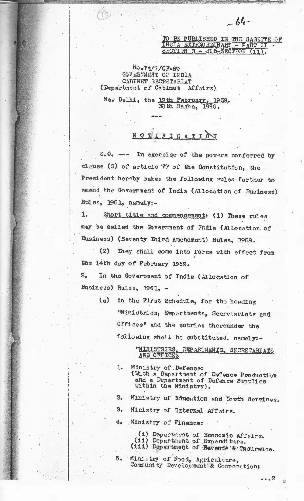
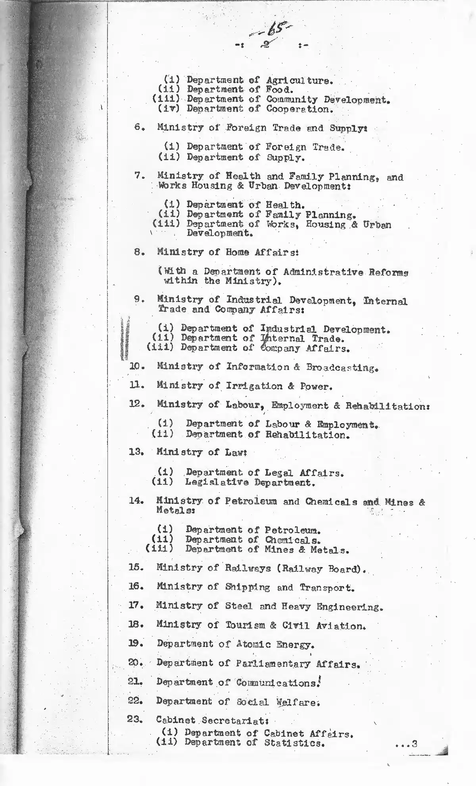
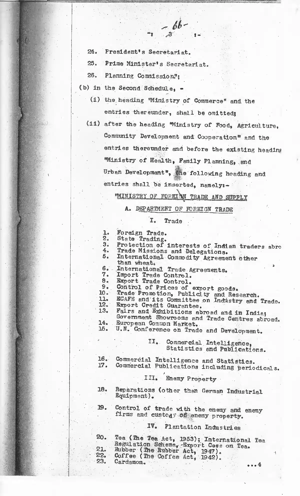
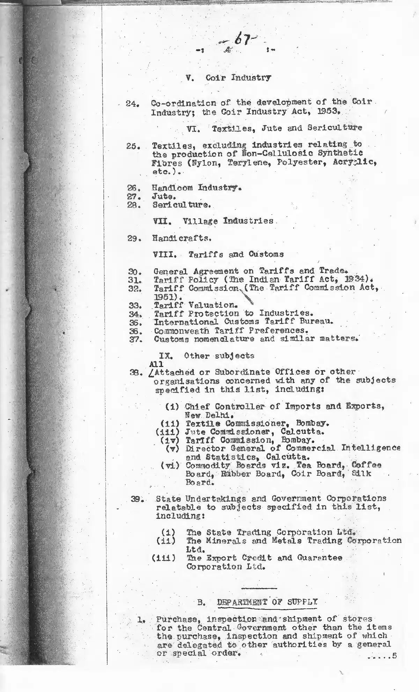
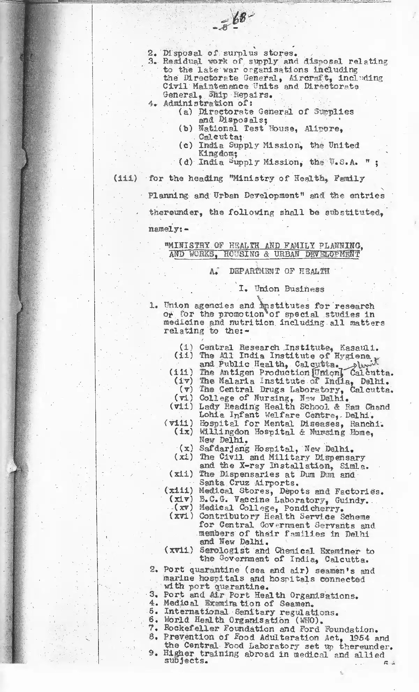
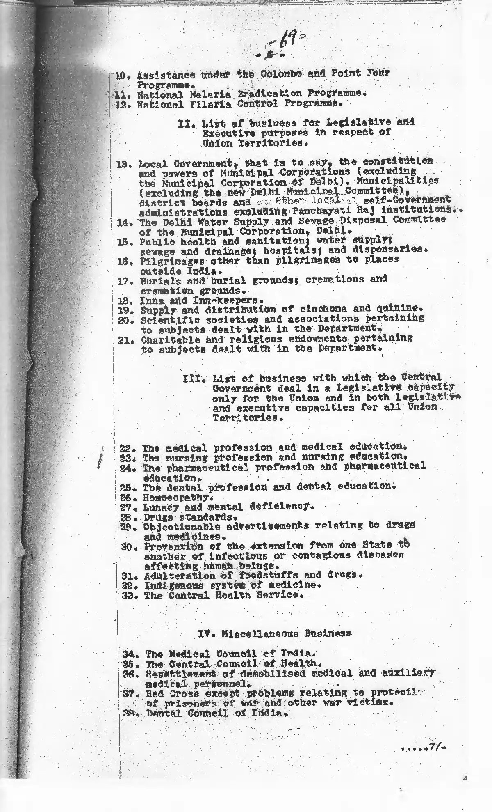
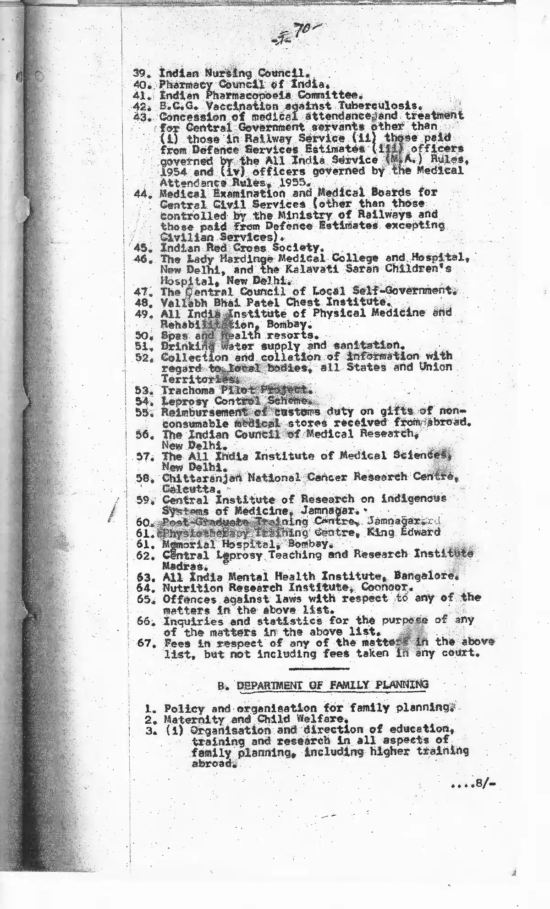
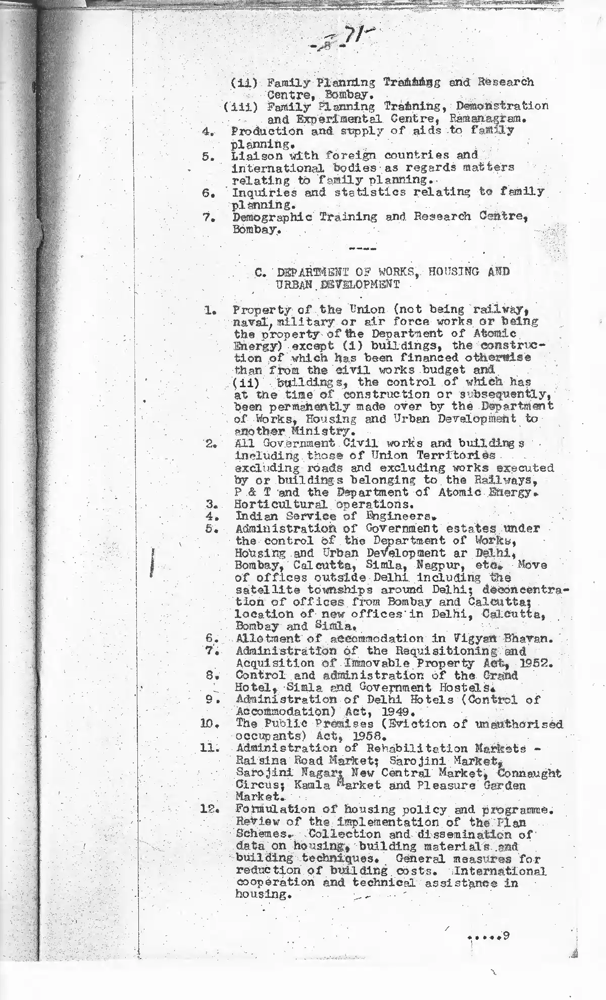
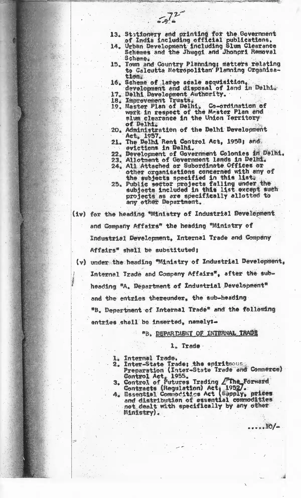
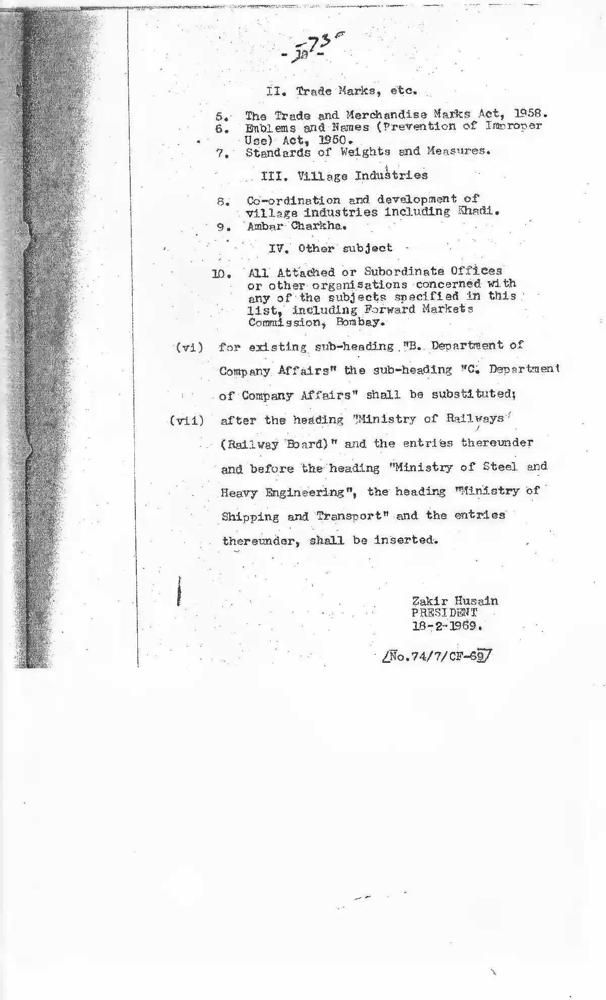

Amendment #73 (S.O 731, 1969)
8 changes: 1 to the First Schedule, 7 to the Second Schedule. 8 applied
What it did to the ministries
- moved7 subjects move from Ministry of Works, Housing & Supply to Ministry of Health and Family Planning, and Works Housing & Urban Development change 3, 4 · histories: Supply, Health and Family Planning, and Works Housing & Urban Development
- renamedMinistry of Commerce is renamed Ministry of Foreign Trade and Supply change 2, 3 · histories: Foreign Trade
- renamedMinistry of Health, Family Planning and Urban Development is renamed Ministry of Health and Family Planning, and Works Housing & Urban Development change 3, 4 · histories: Health and Family Planning, and Works Housing & Urban Development
- renamedMinistry of Industrial Development & Company Affairs is renamed Ministry of Industrial Development, Internal Trade and Company Affairs change 5, 6, 7 · histories: Industry
- grewMinistry of Industrial Development, Internal Trade and Company Affairs grows from 42 to 53 subjects change 5, 6, 7 · histories: Industry
The order, page by page
Page 1 of 10

1Schedule 1
- MINISTRIES, DEPARTMENTS. SECRETARIATS AND OFFICES
- 1. Ministry of Defence
- -. Department of Defence Production
- -. Department of Defence Supplies
- 2. Ministry of Education and Youth Services.
- 3. Ministry of External Affairs.
and 48 more
- 4. Ministry of Finance:
- i. Department of Economic Affairs.
- ii. Department of Expenditure.
- iii. Department of Revenue & Insurance.
- 5. Ministry of Food, Agriculture Community Development & Cooperation: ...2
- i. Department of Agriculture.
- ii. Department of Food.
- iii. Department of Community Development.
- iv. Department of Cooperation.
- 6. Ministry of Foreign Trade and Supply:
- i. Department of Foreign Trade.
- ii. Department of Supply.
- 7. Ministry of Health and Family Planning, and Works Housing & Urban Development:
- i. Department of Health.
- ii. Department of Family Planning.
- iii. Department of Works, Housing & Urban Development.
- 8. Ministry of Home Affairs
- -. Department of Administrative Reforms
- 9. Ministry of Industrial Development, Internal Trade and Company Affairs:
- i. Department of Industrial Development.
- ii. Department of Internal Trade.
- iii. Department of Company Affairs.
- 10. Ministry of Information & Broadcasting.
- 11. Ministry of Irrigation & Power.
- 12. Ministry of Labour, Employment & Rehabilitation:
- i. Department of Labour & Employment.
- ii. Department of Rehabilitation.
- 13. Ministry of Law:
- i. Department of Legal Affairs.
- ii. Legislative Department.
- 14. Ministry of Petroleum and Chemicals and Mines & Metals:
- i. Department of Petroleum.
- ii. Department of Chemicals.
- iii. Department of Mines & Metals.
- 15. Ministry of Railways (Railway Board)
- 16. Ministry of Shipping and Transport.
- 17. Ministry of Steel and Heavy Engineering.
- 18. Ministry of Tourism & Civil Aviation.
- 19. Department of Atomic Energy.
- 20. Department of Parliamentary Affairs.
- 21. Department of Communications!
- 22. Department of Social Welfare.
- 23. Cabinet Secretariat:
- i. Department of Cabinet Affairs.
- ii. Department of Statistics. ..3 bb-
- 24. President's Secretariat.
- 25. Prime Minister's Secretariat.
- 26. Planning Planning Commission
applied at schedule 1 in the Rules after #73
read page break
Page 2 of 10

Page 3 of 10

23Schedule 2 › Ministry of Commerce
applied at schedule 2 › ministry in the Rules after #73
after Schedule 2 › Ministry of Food, Agriculture, Community Development and Cooperation
- MINISTRY OF FOREIGN TRADE AND SUPPLY
- A. DEPARTMENT OF FOREIGN TRADE
- I. Trade
- 1. Foreign Trade.
- 2. State Trading.
- 3. Protection of interests of Indian traders abro
and 58 more
- 4. Trade Missions and Delegations.
- 5. International Commodity Agreement other than wheat.
- 6. International Trade Agreements.
- 7. Import Trade Control.
- 8. Export Trade Control.
- 9. Control of Prices of export goods.
- 10. Trade Promotion, Publicity and Research.
- 11. ECAFE and its Committee on Industry and Trade.
- 12. Export Credit Guarantee.
- 13. Fairs and Exhibitions abroad and in India Government Showrooms and Trade Centres abroad.
- 14. European Common Market..
- 15. U.N. Conference on Trade and Development.
- II. Commercial Intelligence Statistics and Publications.
- 16. Commercial Intelligence and Statistics.
- 17. Commercial Publications including periodicals.
- III. Enemy Property
- 18. Reparations (other than German Industrial Equipment).
- 19. Control of trade with the enemy and enemy firms and custody of enemy property.
- IV. Plantation Industries
- 20. Tea (The Tea Act, 1963); International Tea Regulation Scheme, Export Cess on Tea.
- 21. Rubber (The Rubber Act, 1947).
- 22. Coffee (The Coffee Act, 1942).
- 23. Cardamom. ...4
- V. Coir Industry
- 24. Co-ordination of the development of the Coir. Industry; the Coir Industry Act, 1953.
- VI. Textiles, Jute and Sericulture
- 25. Textiles, excluding industries relating to the production of Non-Cellulosic Synthetic Fibres (Nylon, Terylene, Polyester, Acrylic etc.)..
- 26. Handloom Industry.
- 27. Jute.
- 28. Sericulture.
- VII. Village Industries
- 29. Handicrafts.
- VIII. Tariffs and Customs
- 30. General Agreement on Tariffs and Trade.
- 31. Tariff Policy (The Indian Tariff Act, 1934).
- 32. Tariff Commission, (The Tariff Commission Act 1951).
- 33. Tariff Valuation.
- 34. Tariff Protection to Industries.
- 35. International Customs Tariff Bureau.
- 36. Commonweath Tariff Preferences.
- 37. Customs nomenclature and similar matters.
- IX. Other subjects All
- 38. [Attached or Subordinate Offices or other organisations concerned with any of the subjects specified in this list, including: (1) Chief Controller of Imports and Exports New Delhi.
- ii. Textile Commissioner, Bombay.
- iii. Jute Commissioner, Calcutta.
- iv. Tariff Commission, Bombay.
- v. Director General of Commercial Intelligence and Statistics, Calcutta.
- vi. Commodity Boards viz. Tea Board, Coffee Board, Rubber Board, Coir Board, Silk Board.
- 39. State Undertakings and Government Corporations relatable to subjects specified in this list including: (1) The State Trading Corporation Ltd. (11) The Minerals and Metals Trading Corporation Ltd. (111) The Export Credit and Guarentee Corporation Ltd.
- B. DEPARTMENT OF SUPPLY
- 1. Purchase, inspection and shipment of stores for the Central Government other than the items the purchase, inspection and shipment of which are delegated to other authorities by a general or special order. ..5
- 2. Disposal of surplus stores.
- 3. Residual work of supply and disposal relating to the late war organisations including the Directorate General, Aircraft, including Civil Maintenance Units and Directorate General, Ship Repairs.
- 4. Administration of:
- a. Directorate General of Supplies and Disposals
- b. National Test House, Alipore Calcutta
- c. India Supply Mission, the United Kingdom
- d. India Supply Mission, the U.S.A.
applied at schedule 2 › ministry MINISTRY OF FOREIGN TRADE AND SUPPLY in the Rules after #73
read hindi missing, read page break
Page 4 of 10

Page 5 of 10

4Schedule 2 › Ministry of Health, Family Planning and Urban Development
- MINISTRY OF HEALTH AND FAMILY PLANNING AND WORKS. HOUSING & URBAN DEVELOPMENT
- A. DEPARTMENT OF HEALTH
- I. Union Business
- 1. Union agencies and Institutes for research or for the promotion of special studies in medicine and nutrition including all matters relating to the:-
- i. Central Research Institute, Kasauli. (11) The All India Institute of Hygiene and Public Health, Calcutta. wit
- iii. The Antigen Production (Union] Calcutta.
and 112 more
- iv. The Malaria Institute of India, Delhi.
- v. The Central Drugs Laboratory, Calcutta.
- vi. College of Nursing, New Delhi.
- vii. Lady Reading Health School & Ram Chand Lohia Infant Welfare Centre, Delhi. (viii) Hospital for Mental Diseases, Ranchi.
- ix. Willingdon Hospital & Nursing Home New Delhi. x) Safdarjang Hospital, New Delhi.
- xi. The Civil and Military Dispensary and the X-ray Installation, Simla.
- xii. The Dispensaries at Dum Dum and Santa Cruz Airports. (xiii) Medical Stores, Depots and Factories.
- xlv. B.C.G. Vaccine Laboratory, Guindy. -(xv) Medical College, Pondicherry.
- xvi. Contributory Health Service Scheme for Central Government Servants and members of their families in Delhi and New Delhi. (xvii) Serologist and Chemical Examiner to the Government of India, Calcutta.
- 2. Port quarantine (sea and air) seamen's and marine hospitals and hospitals connected with port quarantine.
- 3. Port and Air Port Health Organisations.
- 4. Medical Examira tion of Seamen.
- 5. International Sanitary regulations.
- 6. World Health Organisation (WHO).
- 7. Rockefeller Foundation and Ford Foundation.
- 8. Prevention of Food Adulteration Act, 1954 and the Central Food Laboratory set up thereunder.
- 9. Higher training abroad in medical and allied subjects. 69 =
- 10. Assistance under the Colombo and Point Four Programme.
- 11. National Malaria Eradication Programme.
- 12. National Filaria Control Programme.
- II. List of business for Legislative and Executive purposes in respect of Union Territories.
- 13. Local Government, that is to say, the constitution and powers of Municipal Corporations (excluding the Municipal Corporation of Delhi). Municipalities (excluding the new Delhi Municipal Committee) district boards and other local al self-Government administrations excluding Panchayati Raj…
- 14. The Delhi Water Supply and Sewage Disposal Committee of the Municipal Corporation, Delhi.
- 15. Public health and sanitation; water supply sewage and drainage; hospitals; and dispensaries.
- 16. Pilgrimages other than pilgrimages to places outside India.
- 17. Burials and burial grounds; cremations and cremation grounds.
- 18. Inns, and Inn-keepers.
- 19. Supply and distribution of cinchona and quinine.
- 20. Scientific societies and associations pertaining to subjects dealt with in the Department.
- 21. Charitable and religious endowments pertaining to subjects dealt with in the Department.
- III. List of business with which the Central Government deal in a Legislative capacity only for the Union and in both legislative and executive capacities for all Union. Territories.
- 22. The medical profession and medical education.
- 23. The nursing profession and nursing education.
- 24. The pharmaceutical profession and pharmaceutical education.
- 25. The dental profession and dental education.
- 26. Homoeopathy.
- 27. Lunacy and mental deficiency.
- 28. Drugs standards.
- 29. Objectionable advertisements relating to drugs and medicines.
- 30. Prevention of the extension from one State to another of infectious or contagious diseases affecting human beings.
- 31. Adulteration of foodstuffs and drugs.
- 32. Indigenous system of medicine.
- 33. The Central Health Service.
- IV. Miscellaneous Business
- 34. The Medical Council of India.
- 35. The Central Council of Health
- 36. Resettlement of demobilised medical and auxiliary medical personnel.
- 37. Red Cross except problems relating to protection of prisoners of war and other war victims.
- 38. Dental Council of India 7/-
- 39. Indian Nursing Council.
- 40. Pharmacy Council of India.
- 41. Indian Pharmacopoeia Committee.
- 42. B.C.G. Vaccination against Tuberculosis.
- 43. Concession of medical attendance and treatment for Central Government servants other than
- i. those in Railway Service (11) those paid from Defence Services Estimates (111) officers governed by the All India Service (MA.) Rules 1954 and (iv) officers governed by the Medical Attendance Rules, 1955.
- 44. Medical Examination and Medical Boards for Central Civil Services (other than those controlled by the Ministry of Railways and those paid from Defence Estimates excepting Civilian Services).
- 45. Indian Red Cross Society.
- 46. The Lady Hardinge Medical College and Hospital New Delhi, and the Kalavati Saran Children's Hospital, New Delhi.
- 47. The Central Council of Local Self-Government.
- 48. Vallabh Bhai Patel Chest Institute.
- 49. All India Institute of Physical Medicine and Rehabilitation, Bombay.
- 50. Spas and health resorts.
- 51. Drinking water supply and sanitation.
- 52. Collection and collation of information with regard to local bodies, all States and Union Territories.
- 53. Trachoma Pilot Project.
- 54. Leprosy Control Scheme.
- 55. Reimbursement of customs duty on gifts of nonconsumable medical stores received from abroad.
- 56. The Indian Council of Medical Research New Delhi.
- 57. The All India Institute of Medical Sciences New Delhi.
- 58. Chittaranjan National Cancer Research Centre Calcutta.
- 59. Central Institute of Research on indigenous Systems of Medicine, Jamnagar..
- 60. Post Graduate Training Centre, Jamnagar.c
- 61. Physiothebapy Training Centre, King Edward Memorial Hospital, Bombay.
- 62. Central Leprosy Teaching and Research Institute Madras.
- 63. All India Mental Health Institute, Bangalore.
- 64. Nutrition Research Institute, Coonoor.
- 65. Offences against laws with respect to any of the matters in the above list.
- 66. Inquiries and statistics for the purpose of any of the matters in the above list.
- 67. Fees in respect of any of the matters in the above list, but not including fees taken in any court.
- B. DEPARTMENT OF FAMILY PLANNING
- 1. Policy and organisation for family planning.
- 2. Maternity and Child Welfare.
- 3. (1) Organisation and direction of education training and research in all aspects of family planning, including higher training abroad. ....8/- (11) Family Planning Tramming and Research Centre, Bombay.
- iii. Family Planning Training, Demonstration and Experimental Centre, Ramanagram.
- 4. Production and supply of aids to family planning.
- 5. Liaison with foreign countries and international bodies as regards matters relating to family planning..
- 6. Inquiries and statistics relating to family planning.
- 7. Demographic Training and Research Centre Bombay.
- C. DEPARTMENT OF WORKS, HOUSING AND URBAN DEVELOPMENT
- 1. Property of the Union (not being railway naval, military or air force works or being the property of the Department of Atomic Energy) except (1) buildings, the construction of which has been financed otherwise than from the civil works budget and
- ii. buildings, the control of which has at the time of construction or subsequently been permanently made over by the Department of Works, Housing and Urban Development to another Ministry.
- 2. All Government Civil works and buildings including those of Union Territories excluding roads and excluding works executed by or buildings belonging to the Railways P&T and the Department of Atomic Energy. 3 3. Horticultural operations. 4 4. Indian Service of Engineers. 0 Administration of…
- 5. the control of the Department of Works Housing and Urban Development ar Delhi Bombay, Calcutta, Simla, Nagpur, etc. Move eta. of offices outside Delhi including the satellite townships around Delhi; deconcentration of offices from Bombay and Calcutta location of new offices in Delhi, Calcutta…
- 6. Allotment of accommodation in Vigyan Bhavan. Administration of the Requisitioning and Acquisition of Immovable Property Act, 1952.
- 8. Control and administration of the Grand Hotel, Simla end Government Hostels.
- 9. Administration of Delhi Hotels (Control of Accommodation) Act, 1949.
- 10. The Public Premises (Eviction of unauthorised occupants) Act, 1958.
- 11. Administration of Rehabilitation Markets Raisina Road Market; Sarojini Market Sarojini Nagar; New Central Market, Connaught Circus; Kamla Market and Pleasure Garden : Market.
- 12. Formulation of housing policy and programme. Review of the implementation of the Plan Schemes. Collection and dissemination of data on housing, building materials .and building techniques. General measures for reduction of building costs. International cooperation and technical assistance in…
- 13. Stationery and printing for the Government of India including official publications.
- 14. Urban Development including Slum Clearance Schemes and the Jhuggi and Jhonpri Removal Scheme.
- 15. Town and Country Planning; matters relating to Calcutta Metropolitan Planning Organisation.
- 16. Scheme of large scale acquisition development and disposal of land in Delhi
- 17. Delhi Development Authority.
- 18. Improvement Trusts.
- 19. Master Plan of Delhi. Co-ordination of work in respect of the Mester Plan and slum clearance in the Union Territory of Delhi
- 20. Administration of the Delhi Development Act, 1957.
- 21. The Delhi Rent Control Act, 1958; and _ evictions in Delhi.
- 22. Development of Government Colonies in Delhi.
- 23. Allotment of Government lands in Delhi.
- 24. All Attached or Subordinate Offices or other organisations concerned with any of the subjects specified in this lists
- 25. Public sector projects falling under the subjects included in this list except such projects as are specifically allotted to any other Department..
applied at schedule 2 › ministry Ministry of Health, Family Planning and Urban Development in the Rules after #73
read hindi missing, read page break
Page 6 of 10

Page 7 of 10

Page 8 of 10

Page 9 of 10

56Schedule 2 › Ministry of Industrial Development. and Company Affairs
- Ministry of Industrial Development, Internal Trade and Company Affairs shall be substituted
applied at schedule 2 › ministry Ministry of Industrial Development, Internal Trade and Company Affairs shall be substituted in the Rules after #73
read hindi missing
after Schedule 2 › Ministry of Industrial Development, Internal Trade and Company Affairs › Department of Industrial Development
- B. DEPARTMENT OF INTERNAL TRADE
- I. Trade
- 1. Internal Trade.
- 2. Inter-State Trade; the spirituous Preparation (Inter-State Trade and Commerce) Control Act, 1955.
- 3. Control of Futures Trading The Forward Contracts (Regulation) Act 1952.
- 4. Essential Commodities Act (Supply, prices. and distribution of essential commodities not dealt with specifically by any other Ministry). .....10% 10/-
and 10 more
- 17. 3
- II. Trade Marks, etc.
- 5. The Trade and Merchandise Marks Act, 1958.
- 6. Emblems and Names (Prevention of Improper Use) Act, 1950.
- 7. Standards of Weights and Measures.
- III. Village Industries
- 8. Co-ordination and development of village industries including Khadi.
- 9. Ambar Charkha.
- IV. Other subject
- 10. All Attached or Subordinate Offices or other organisations concerned with any of the subjects specified in this. list, including Forward Markets Commission, Bombay.
applied at schedule 2 › ministry Ministry of Industrial Development, Internal Trade and Company Affairs shall be substituted ›… in the Rules after #73
read hindi missing, read page break, states inferred loose
Page 10 of 10

78Schedule 2 › Ministry of Industrial Development, Internal Trade and Company Affairs › Department of Company Affairs
- C. Department of Company Affairs
applied at schedule 2 › ministry Ministry of Industrial Development, Internal Trade and Company Affairs shall be substituted ›… in the Rules after #73
read hindi missing, states inferred loose
after Schedule 2 › Ministry of Railways" (Railway Board)
applied at schedule 2 › ministry MINISTRY OF RAILWAYS (RAILWAY BOARD) in the Rules after #73
How this document was read
Edits to the reading
| Date | By | Edit | Before → after |
|---|---|---|---|
| 12 November 2026 | claude | word corrected | |
| 12 November 2026 | claude | word corrected | |
| 12 November 2026 | claude | word corrected | |
| 12 November 2026 | claude | word corrected | |
| 12 November 2026 | claude | word corrected | |
| 12 November 2026 | claude | word corrected | |
| 12 November 2026 | claude | word corrected | |
| 12 November 2026 | claude | word corrected | |
| 12 November 2026 | claude | word corrected | |
| 12 November 2026 | claude | word corrected | |
| 12 November 2026 | claude | word corrected | |
| 12 November 2026 | claude | word corrected | |
| 12 November 2026 | claude | word corrected | |
| 12 November 2026 | claude | word corrected | |
| 12 November 2026 | claude | word corrected | |
| 14 November 2026 | mukundesh | word added | |
| 14 November 2026 | mukundesh | word corrected | |
| 14 November 2026 | mukundesh | word removed | |
| 14 November 2026 | mukundesh | word corrected |
Changes placed by an inference rule
| Change | Rule | Status | What |
|---|---|---|---|
| 6 | loose | accepted | change 6: ministry Ministry of Industrial Development, Internal Trade and Company Affairs taken for ministry Ministry of Industrial Development, Internal Trade and Company Affairs shall be… |
| 7 | loose | accepted | change 7: ministry Ministry of Industrial Development, Internal Trade and Company Affairs taken for ministry Ministry of Industrial Development, Internal Trade and Company Affairs shall be… |
From the Government of India (Allocation of Business) Rules, 1961 and their amendments, as published by the Cabinet Secretariat (cabsec.gov.in), read by orgpedia. The readings of the older scanned gazettes have known gaps.